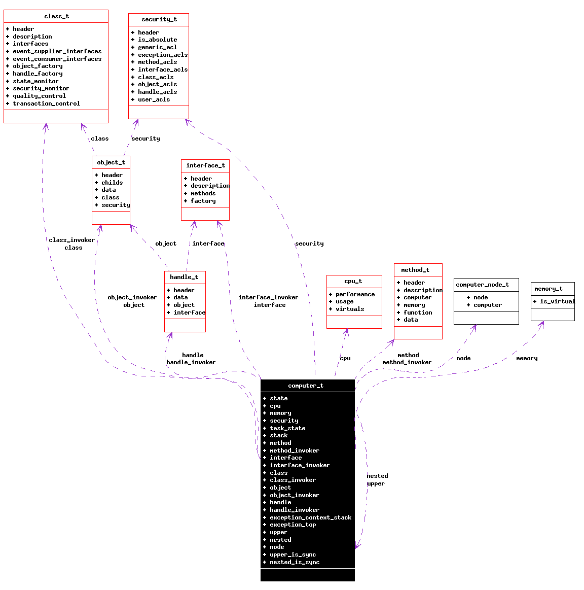

Main Page
Data Structures
Data Structure Members List
File List
Globals
Main Page
|
Alphabetical List
|
Data Structures
|
File List
|
Data Fields
|
Globals
computer_t Struct Reference
#include <
computer.h
>
Collaboration diagram for computer_t:

[
legend
]
Data Fields
volatile
uint32_t
state
p_cpu_t
cpu
p_memory_t
memory
p_security_t
security
p_task_state_t
task_state
p_uint8_t
stack
p_method_t
method
p_method_t
method_invoker
p_interface_t
interface
p_interface_t
interface_invoker
p_class_t
class
p_class_t
class_invoker
p_object_t
object
p_object_t
object_invoker
p_handle_t
handle
p_handle_t
handle_invoker
list_t
exception_context_stack
uint32_t
exception_top
computer_t
*
upper
computer_t
*
nested
computer_node_t
node
bool
upper_is_sync
bool
nested_is_sync
Field Documentation
volatile
uint32_t
computer_t::state
p_cpu_t
computer_t::cpu
p_memory_t
computer_t::memory
p_security_t
computer_t::security
p_task_state_t
computer_t::task_state
p_uint8_t
computer_t::stack
p_method_t
computer_t::method
p_method_t
computer_t::method_invoker
p_interface_t
computer_t::interface
p_interface_t
computer_t::interface_invoker
p_class_t
computer_t::class
p_class_t
computer_t::class_invoker
p_object_t
computer_t::object
p_object_t
computer_t::object_invoker
p_handle_t
computer_t::handle
p_handle_t
computer_t::handle_invoker
list_t
computer_t::exception_context_stack
uint32_t
computer_t::exception_top
struct
computer_t
*
computer_t::upper
struct
computer_t
*
computer_t::nested
computer_node_t
computer_t::node
bool
computer_t::upper_is_sync
bool
computer_t::nested_is_sync
The documentation for this struct was generated from the following file:
computer.h